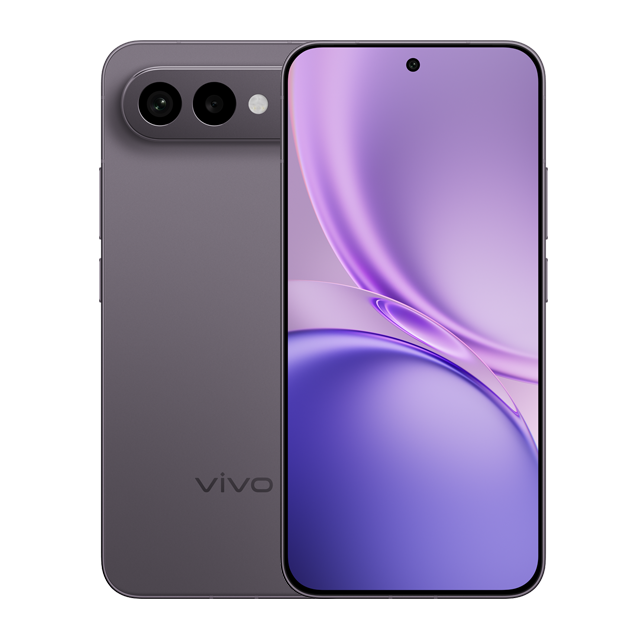

Демонстрация интерфейса. Это не текущий статус.
Моя посылка
Vivo X300 FE · 12/256 ГБ
Графитовый чёрный

Пока нет данных
Нужен адрес сервера и ключ доступа
Облачный трекер не подключён
На iPhone: Safari → Поделиться → На экран «Домой». Затем откройте приложение с иконки, чтобы включить уведомления.
История доставки
- Здесь появятся этапы доставки